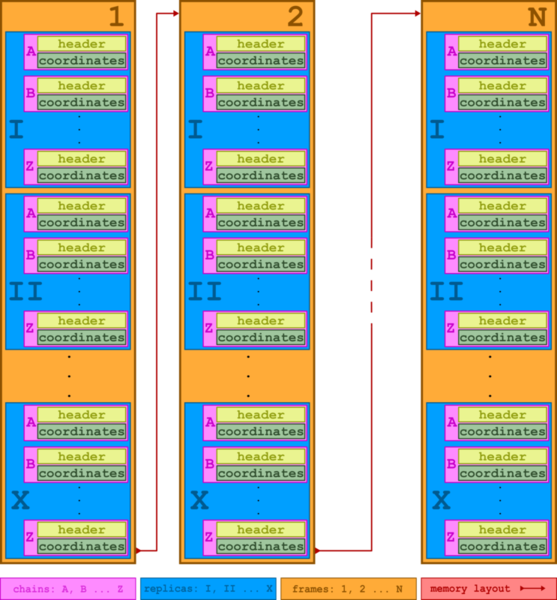

← Home | Overview | Options | Examples | Output Analysis | Advanced Data
CABS-dock Advanced Data¶
This page details the internal data structures and file formats used by the CABS simulation engine.
1. .cbs Files¶
A .cbs file is a compressed archive (tar/gzip) containing the complete set of input and output text files for the CABS simulation module.
Filename Pattern¶
yymmddHHMMSS<random string>.cbs (e.g., 180129155704Enar5w.cbs).
Extraction¶
To extract all files:
tar xzf myfile.cbs
This extracts INP, SEQ, TRAF, OUT, and FCHAINS. To extract a specific file (e.g., SEQ) to screen:
tar xzO SEQ < myfile.cbs
2. INP File (Input)¶
The INP file is a strictly formatted input for the CABS procedure. No empty or comment lines are allowed.
Format¶
- General configuration (lines 1-4)
- CA restraints (lines 5 to 5+N)
- SC restraints (lines 6+N to 6+N+M)
- Excluding sections (lines 7+N+M to 7+N+M+K)
Example INP¶
1245
20 10 10 1 9
1.40 1.40 4.00 1.00 0.50
1.000 2.000 0.125 -2.000 0.375
1432 1.00
1 2 1 48 6.58 1.00
1 2 1 49 5.54 1.00
...
2 1.00
1 5 2 12 4.50 0.50
3 17 3 35 5.00 0.75
6 5.000
7 5 1 66
...
3. SEQ File (Input)¶
Contains protein sequence, secondary structure, and local flexibility.
Format (5 columns): residue-number residue-name chain-ID structure flexibility
Structure codes: 1-coil, 2-helix, 3-turn, 4-sheet.
Flexibility: 0.0 (fully flexible) to 1.0 (rigid).
Example SEQ¶
135 GLU A 1 1.00
136 ARG A 4 1.00
...
1 MET J 1 1.00
2 ALA J 4 1.00
4. FCHAINS File (Input)¶
Contains initial CA atom coordinates in CABS lattice units (integers). Organized by chains and replicas. Note that "dummy" residues are added to the ends of all chains, making them two residues longer than the PDB input.
5. TRAF File (Output)¶
Contains coordinates for every $k$-th conformation ($k$ = MCsteps). The file is divided into blocks corresponding to a single chain within a single replica at a specific time.

6. OUT File (Output)¶
Contains a short summary of the simulation results.